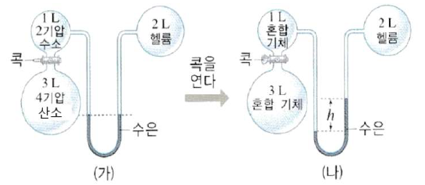

문제 4
그림 (가)와 같이 장치하고 콕을 열었더니, 수소와 산소 기체가 혼합되면서 용기 내 갑자기 스파크가 발생하여 물 기체가 생성되었다. 수소 기체와 산소 기체의 반응을 통해 물 기체가 생성되는 반응은 수소 또는 산소 기체 중 하나가 전부 소진될 때까지 진행되었으며, 이 때 발생한 열은 바로 외부로 빠져 나가 내부의 온도 변화를 발생시키지 않았다. 그림 (나)처럼 수은 기둥의 높이에 변화가 생겼는데, 이 때 높이 \(h\)(cm)의 값을 구하시오. (단, 헬륨, 수소, 산소, 물 기체는 모두 이상 기체이며, 온도는 항상 일정하다. 연결관의 부피는 무시하며, 1기압 = 80 cmHg로 한다.)
